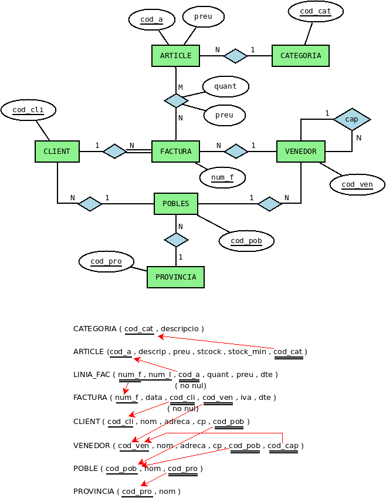
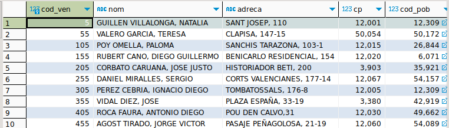
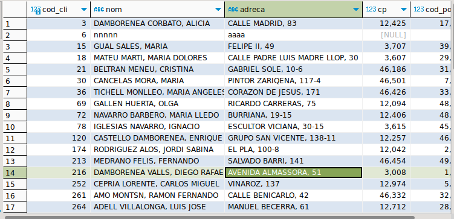

Exercicis de tot el tema
Al llarg d'aquesta tercera part, en el conjunt d'exercicis de DDL, crearem tota l'estructura de la Base de Dades FACTURA , però per a no interferir cadascú amb els altres companys, cadascú es connectarà a la seua Base de Dades factura_local.
L'esquema Entitat-Relació i l'esquema relacional que implementarem serà el següent:

Nota
Durant tots aquestos exercicis de DDL pot ser molt convenient tenir obertes les dues connexions: la de FACTURA (per anar consultant) i la de factura_local (per anar creant i modificant).
Ex_1 - Creeu la taula CATEGORIA , amb els mateixos camps i del mateix tipus que en la taula CATEGORIA de FACTURA , però de moment sense clau principal ni cap altra restricció.
Ex_2 - Creeu la taula ARTICLE , també sense restriccions.
Ex_3 - Crear la taula PROVINCIA , amb la clau principal.
Ex_4 - Crear la taula POBLE , amb la clau principal i la restricció que el camp cod_pro és clau externa que apunta a PROVINCIA.
Ex_5 - Crear la taula VENEDOR , amb la clau principal i la clau externa a POBLE (de moment no definim la clau externa a VENEDOR, que és reflexiva).
Ex_6 - Crear la taula CLIENT , amb la clau principal i la clau externa a POBLE
Ex_7 - Crear la taula FACTURA , amb la clau principal i les claus externes a CLIENT i VENEDOR. També heu d'exigir que cod_cli siga no nul.
Ex_8 - Crear la taula LINIA_FAC , amb la clau principal (observa que està formada per 2 camps) però de moment sense la clau externa que apunta a ARTICLE. A més cod_a ha de ser no nul.
Ex_9 - Afegir un camp a la taula VENEDOR anomenat alies de tipus text, que ha de ser no nul i únic.
Ex_10 - Esborrar el camp anterior, alies , de la taula VENEDOR.
Ex_11 - Afegir la clau principal de CATEGORIA.
Ex_12 - En la taula ARTICLE afegir la clau principal i la clau externa a CATEGORIA.
Ex_13 - En la taula LINIA_FAC afegir la clau externa que apunta a FACTURA, exigint que s'esborre en cascada (si s'esborra una factura, s'esborraran automàticament les seues línies de factura). I també la clau externa que apunta a ARTICLE (aquesta normal, és a dir NO ACTION)
Ex_14 - Afegir un índex anomenat i_nom_cli a la taula CLIENT pel camp nom.
Ex_15 - Afegir un índex anomenati_adr_ven a la taula VENEDOR per a que estiga ordenat per cp (ascendent) i adreca(descendent).
Ex_16 - Crear la vista RESUM_FACTURA , que ens dóne el total dels diners de la factura, el total després del descompte d'articles, i el total després del descompte de la factura, tal i com teníem en la consulta 6.56. A partir d'aquest moment podrem utilitzar la vista per a traure aquestos resultats
Ex 17 - Crear la vista RESUM_VENEDOR, on aparega informació del nom del venedor, del nombre total d'articles venuts i de l'import total facturat.
Ex 18 - Crear la vista RESUM_CATEGORIAS, on aparega informació del nom de la categoria, del nombre total d'articles venuts i de l'import total facturat.
Ex 19 - Tenim creada la taula VENEDOR i es desitja que la clau principal siga una seqüència autonumérica personalitzada. Observa la informació actual en la taula VENEDOR de la BD factura i analitza quina seqüència s'ha utilitzat.

- A continuació realitza la inserció d'un registre en aquesta taula tenint en compte la seqüència creada, per a comprovar que funciona.
- Finalment elimina els objectes creats.
- Escriu les sentències en l'ordre adequat
Ex 20 - Volem crear una nova taula CLIENT2 i es vol que la clau principal siga una seqüència personalitzada autonumerica. Observa la informació actual en la taula CLIENT de la BD factura i analitza quina seqüència s'hauria de utilitzat.

- Has de tindre en compte que al crear la taula CLIENT2 perquè el camp cod_cli, per defecte sempre agafe el valor següent de la seqüència definida anteriorment.
- A continuació realitza la inserció d'un registre en aquesta taula tenint en compte els canvis realitzats en la base de dades.
- Finalment elimina els objectes creats. Escriu les sentències en l'ordre adequat.
Ex 21 - En la taula FACTURA2 es vol que la clau principal siga una seqüència autonumérica en sèrie.
- Crea la taula FACTURA2 perquè el camp num_f utilitze una seqüència en sèrie.
- A més has de tindre en compte que el iva de la factura solament pot ser el 10 o el 21 i que el descompte la factura ha de ser inferior a 50.
- A continuació realitza la inserció d'un registre en aquesta taula per a comprovar que funciona.
- Finalment elimina els objectes creats.
- Escriu les sentències en l'ordre adequat.
Ex 22 - Crea la taula ARTICLE2 tenint en compte el següent;
- Comprovar que el preu, stock i stock_min no és negatiu
- Crear un tipus de dades per a l'estat d'un article, que pot prendre els valors "Disponible", "Esgotat" o "En espera".
-
Crea un tipus de dada per a registrar el codi de barres EAN-13 d'un article. Tenint en compte que el codi de barres EAN-13 s'observen 3 parts:
- País de procedència: són els dos o tres primers dígits i, en el cas d'Espanya, aquest prefix és el 84.
- Codi del producte: següents 9 o 10 dígits.
- Dígit de control: és un sol número, l'últim, i serveix per a corroborar que el codi és correcte.
-
Comprovar que stock no pot ser inferior a stock _min (HAS DE DEFINIR UNA CONSTRAINT)
- A continuació realitza la inserció d'un registre en aquesta taula per a comprovar que funciona..
- Finalment elimina els objectes creats.
- Escriu les sentències en l'ordre adequat.
Llicenciat sota la Llicència Creative Commons Reconeixement NoComercial CompartirIgual 3.0